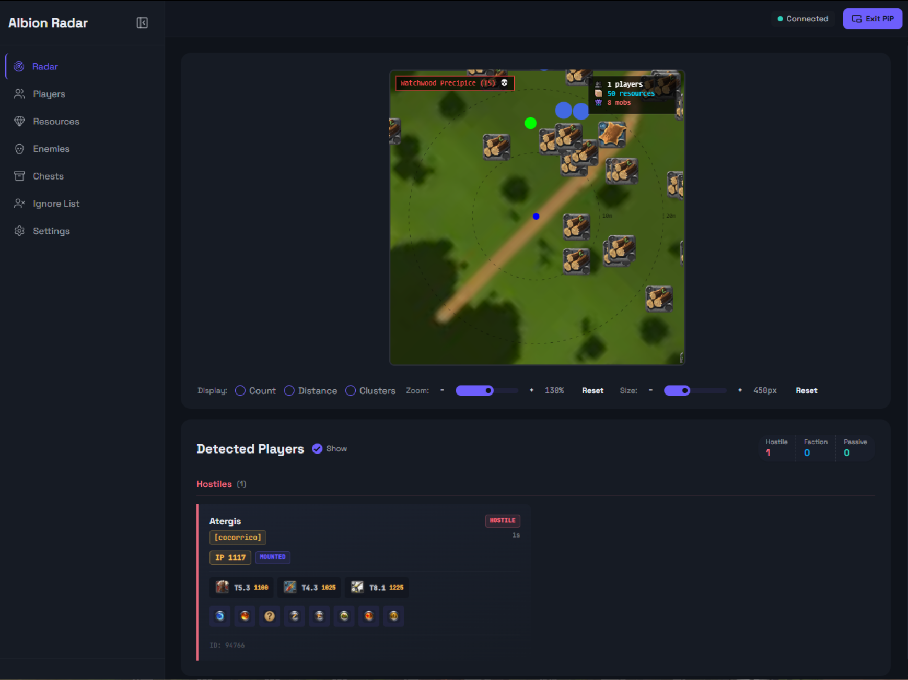
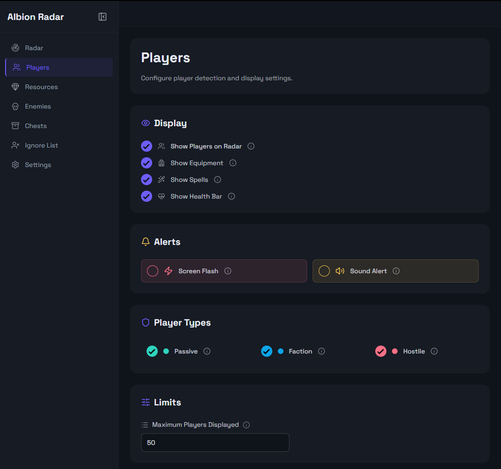
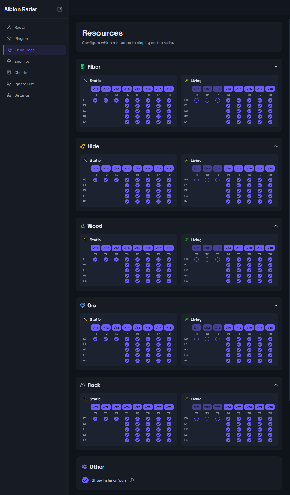
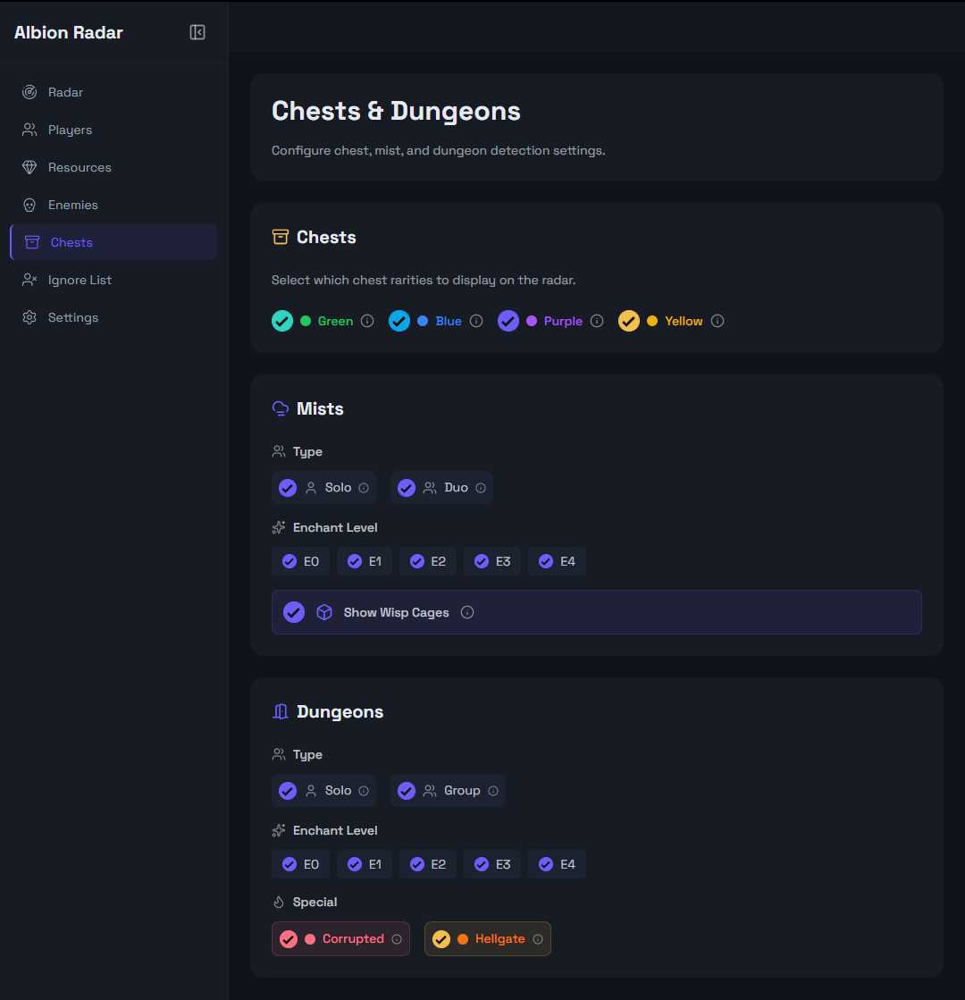
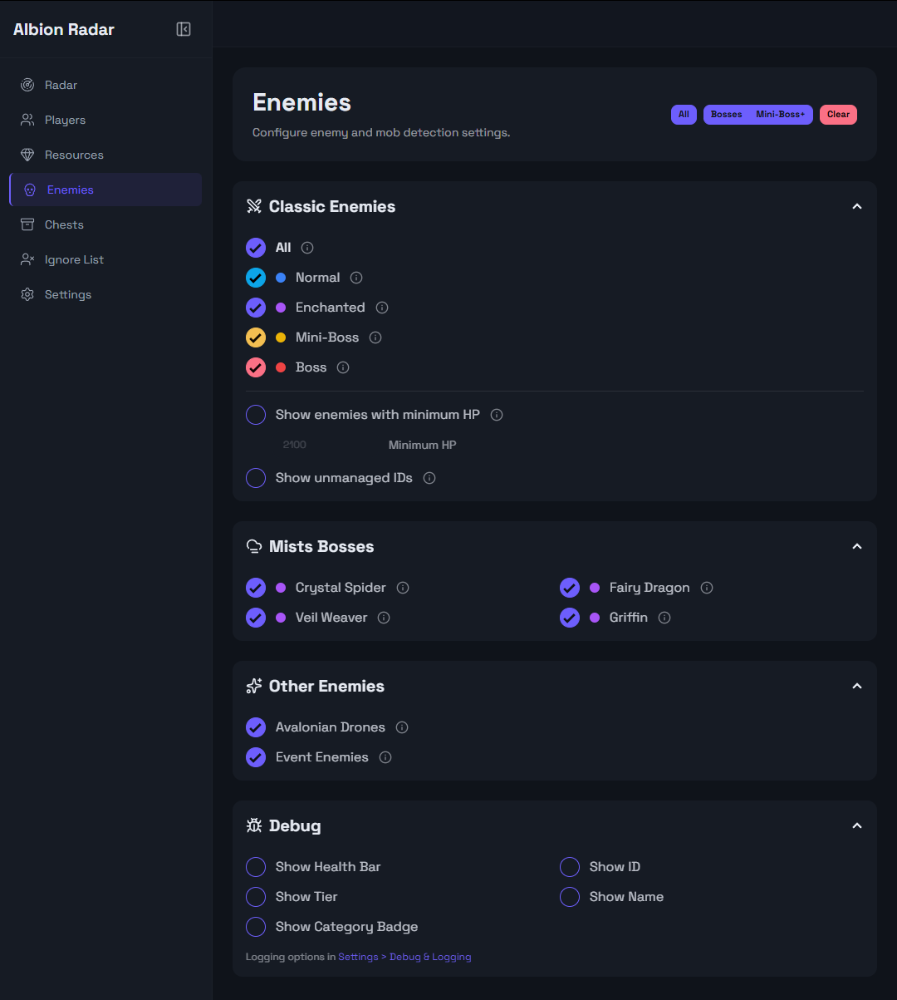

DLC Albion Radar
DLC Albion Radar — это удобный инструмент, который дополняет функционал игры и помогает получать полезную информацию об игроках, ресурсах и ключевых точках без лишнего визуального шума.

Безопасность
Почему это безопасно?
Почему это безопасно?
Albion разрешает анализировать трафик - есть определенные ограничения, но сама игра не имеет инструментов, чтобы понять, какие именно данные мы извлекаем. Поэтому с этой частью все абсолютно легально.
Миникарта и интерфейс
Миникарта выглядит как чит, но на деле это просто браузерное окно поверх игры. За использование браузеров никого не банили, так что здесь все в порядке.
Что изменилось
Недавно Albion обновил систему передачи пакетов, и теперь "легально" получать данные о других игроках нельзя.
Безопасная версия
Можно вытащить данные из памяти игры, но тогда о безопасности аккаунта говорить уже нет смысла. У нас безопасная версия, где видно всю информацию о игроках, но расположение на карте получить не можем.
Что Показывает Radar

Отслеживание игроков

Ресурсы

Сундуки и данжи

Обнаружение противников